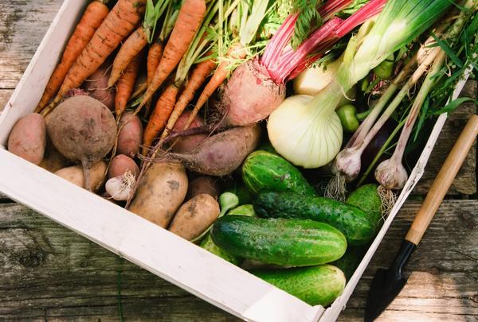

Нехитрая наука, скажут многие: было бы что хранить. А знаете ли вы, что соблюдая простые, в общем-то, правила, можно значительно увеличить срок годности продукта, а значит и прилично съэкономить?..
Моя подруга практически никогда не выбрасывает продукты питания. При довольно-таки небольшом семейном доходе ей удается приобретать и одежду, и книги, и даже на приятные семейные походы-развлечения хватает. Перечитав кучу литературы, осмыслив несколько модных учений, Ирина к вопросу обеспечения питания подошла со всей присущей ей основательностью.
Когда в молодой семье появился первый ребенок, Ирина приобрела большой морозильник, хороший кухонный комбайн и сушилку для овощей. Таким образом, вопрос правильного питания семьи был практически решен: у этой хозяйки есть всегда под рукой разнообразный набор продуктов, причем отменного качества.
Ой, мороз, мороз…
Большую часть продуктов, выращенных на дачном участке, Ирина замораживает. Ягоды моет, затем выкладывает на чистую ткань, чтобы немного подсушить, перетирает с сахаром при помощи комбайна. К процессу подруга подходит творчески: заготавливает ягоды как сами по себе, так и в различных миксах. Зимой достаточной залить ягодный брикетик горячей водой – и витаминный напиток готов!
Казалось бы – проще не бывает, но и при таком виде заготовки впрок нужно неукоснительно соблюдать некоторые правила.
Как и насколько замораживаем разные продукты?
Мясные продукты. Свинину и телятину рекомендуется замораживать в парном состоянии сразу же после убоя, говядину через 4 5 дней, баранину – через 6 дней после выдержки при температуре 4-7 °C.
Перед замораживанием мясо нужно разрезать на куски для разового использования и вырезать жир.
Небольшие куски мяса, бифштексы, отбивные, рубленое мясо целесообразно разделить между собой целлофановыми прокладками, чтобы они не смерзались.
Рекомендуемые сроки хранения: фарш– 2 месяца, ливер – 3 месяца, бифштексы и отбивные из телятины, свинины и баранины – 6 месяцев, телятины – 8 месяцев, говядины – 9 10 месяцев, мясные блюда домашнего приготовления – 3 4 месяца, а промышленного приготовления – 4 12 месяцев; гуси, утки, зайцы и кролики – 6 месяцев, куры, индейка, дичь и оленина – 9 месяцев.
Кроликов, домашнюю птицу и дичь перед замораживанием рекомендуется выдерживать 2-3 дня в холодильной камере при температуре 4-7 °C.
Внутренности тушек нужно упаковать отдельно, поскольку сроки хранения их значительно меньше, чем тушек.
Не рекомендуется фаршировать тушки перед замораживанием.
Рыбные продукты. Рыбу рекомендуется замораживать не позднее, чем через 3 часа после отлова. При этом лучше всего сохраняются ее вкусовые качества.
Крупную рыбу нужно разрезать на небольшие куски и разделить их пленкой или жиронепроницаемой бумагой.
Рыбу небольшого размера можно заледенить. Для этого сначала ее выдерживают 2-3 часа в морозильной камере, а затем на несколько секунд окунают в холодную воду. После образования ледяной корки рыбу упаковывают и снова возвращают в морозильную камеру.
Рекомендуемые сроки хранения: мелкая рыба – 2-3 месяца, рыбные блюда домашнего приготовления – 3-4 месяца, а промышленного приготовления – 5-9 месяцев, крупная рыба и жареная – 4-6 месяцев.
Молочные продукты. Молоко можно замораживать только пастеризованное.
Сливки и сметану лучше не замораживать. Сливки и майонезы при замораживании свертываются. Сметана после размораживания расслаивается и теряет свои гастрономические качества.
Твердые сыры предпочтительно замораживать готовыми к употреблению и натертыми на терке.
Мягкие сыры и прессованный творог можно замораживать лишь для непродолжительного хранения.
Рекомендуемые сроки хранения молочных продуктов – 6 12 месяцев.
Овощи предпочтительно замораживать через 2-3 часа после сбора. Перед замораживанием их рекомендуется бланшировать в кипящей воде. Вместо бланширования овощи можно опустить на несколько секунд в кипящую подсоленную воду (30 г соли на 4 л воды) и затем сразу же охладить под струей воды. Дать воде стечь, просушить, разделить на порции для разового использования и упаковать перед замораживанием.
Овощи с большим содержанием влаги и салаты лучше не замораживать.
Рекомендуемые сроки хранения: овощных суповых наборов – 6-7 месяцев, отдельных овощей – 10-12 месяцев.
Фрукты и ягоды можно замораживать разными способами.
Нарезанные и мелкие фрукты и ягоды в натуральном виде замораживают в пакетах в форме брикетов толщиной 2-3 см.
Мелкие фрукты и ягоды в сахаре замораживают на неглубоком поддоне и затем упаковывают. Плоды в сахаре не смерзаются, остаются твердыми и пригодны для употребления в слегка подмороженном виде.
Ломтики фруктов (яблок, груш и абрикосов) можно заморозить в сахарном сиропе (100 200 г сахара на 0,5 л воды). Сироп нужно медленно нагреть до полного растворения сахара и затем охладить. На каждый килограмм фруктов заливают 0,5 л сиропа, оставляя в пакете свободное пространство для расширения при замерзании. Чтобы фрукты не всплывали, сверху укладывают скрученную вощеную бумагу.
Фруктовое пюре из крупноплодных яблок и груш позволяет максимально сохранить витамины и микроэлементы после длительного хранения. Плоды нужно очистить и удалить сердцевину, затем протереть и добавить сахару по вкусу. При заполнении пакетов нужно не забыть оставить место для расширения при замерзании.
Рекомендуемые сроки хранения фруктов и ягод – 10-12 месяцев.
Размораживание
Лучше всего размораживать в микроволновой печи. Так, мясо в микроволновке прогревается равномерно, а общее время на размораживание и приготовление блюда сокращается в десятки раз.
На втором месте – размораживание в холодильнике. Правда, времени потребуется побольше.
А вот размораживать в воде или на открытом воздухе не стоит – потери питательных веществ в таком случае неизбежны.
Овощи, а также ягоды и фрукты, следует размораживать непосредственно перед употреблением. В размороженном состоянии они через несколько часов темнеют, размягчаются, приобретают посторонние запахи и привкусы.
Мясные полуфабрикаты и готовые блюда можно размораживать и разогревать на плите, а также в духовке при 150 220 °C. Порционное мясо и птицу можно использовать для приготовления без предварительного размораживания.
Все замороженные овощи можно готовить без размораживания, увеличив время обычной варки примерно на 1/3. Свежезамороженные бланшированные овощи доводятся до готовности даже быстрее незамороженных. Кстати, при варке быстрозамороженных овощей потери витаминов даже меньше, чем при варке свежих.
Расставим все по полочкам
В основной камере холодильника всегда очень сухой воздух, который способствует быстрому испарению влаги, находящейся в продуктах. Чтобы продукты в холодильнике не высыхали, их нужно упаковывать. Кроме того, упаковка препятствует смешиванию запахов и соприкосновению приготовленных блюд и сырых продуктов, которые могут располагаться рядом на одной полке холодильной камеры.
При краткосрочном (не больше суток) хранении свежего мяса или рыбы в основной камере эти продукты необходимо завернуть в пергаментную бумагу, смазанную растительным маслом. Такая упаковка хорошо пропускает воздух и в то же время удерживает влагу, не позволяя ей испаряться.
Фрукты и овощи перед хранением моют и высушивают, после чего помещают в специальные контейнеры, расположенные в основном отделении. Плоды небольшого размера, такие как сливы и абрикосы, укладывают в полиэтиленовые пакеты – так они смогут сохранять свежесть на протяжении нескольких дней.
Зелень мыть не следует, ее достаточно просто сбрызнуть водой и завернуть в бумагу.
Самой дешевой и удобной тарой для хранения продуктов считаются одноразовые пакеты, изготовленные из пищевого полиэтилена. Овощи и фрукты в таких пакетах лучше дозревают, одновременно расходуя сахара и влагу. Выделяемый при этом углекислый газ накапливается в закрытом пространстве и предотвращает порчу продуктов, замедляя обменные процессы.
Многие хозяйки отдают предпочтение пластиковым, стеклянным и эмалированным емкостям. Такая посуда позволяет компактно размещать продукты в холодильнике, ее можно мыть и снова использовать по назначению.
Все большей популярностью сегодня пользуются наборы вакуумной посуды. С помощью специального механизма из емкости откачивается около 80 % воздуха. В этих контейнерах, снабженных герметичными крышками, продукты долго не портятся, не теряют своих вкусовых качеств и аромата, могут храниться значительно дольше, чем в открытой таре.
Двухметровый красавец холодильник на Ирининой кухне с лихвой окупил затраты на его приобретение. А супы, которые варит подруга, славятся в кругу наших знакомых: вкусные, ароматные, а главное – разнообразные. Секрет же этого разнообразия прост: «Какой пакетик из холодильника достану – такой суп и будет на обед!» смеется подруга.
Главное – сухо!
В идеале сушить продукты следует на свежем воздухе, вдали от солнечных лучей, лучше всего на чердаке. Ничего не скажешь повезло счастливым обладателям частных усадеб! Но и горожанам унывать не стоит. Например, Иринина сушилка для овощей и фруктов не пылится без дела.
Сушить можно (и нужно!) разнообразные продукты: овощи, фрукты, грибы, коренья, зелень. Высушенные в сушилке продукты хранят в сухом, и в то же время прохладном месте до 2 лет. Тара необходима с герметично закрывающейся крышкой.
Сухофрукты храните в сухом темном месте. Идеальная емкость для сухофруктов металлическая или стеклянная, и обязательно герметичная. Этот продукт из-за содержания жиров, витаминов и минералов может прогоркнуть при длительном контакте с воздухом, что может даже иметь отрицательное влияние на здоровье. Поэтому если вы почувствовали вкусовые изменения, лучше не употреблять такой продукт в пищу.
Засушенные травы могут храниться от 2 до 5 лет при условии, что при сборе трав и их засушивании соблюдены все правила. Также нужно помнить о том, что при хранении трав необходимо измельчать растения. Хранить лучше такие травы не в целлофановых пакетах, а в деревянных емкостях, хотя подойдет и посуда из керамики, темного стекла (но не в пластмассовых!).
Приправы и пряности хранят в сухом и прохладном месте, только первые можно хранить не более 1-2 лет, а вторые – 2-3 года. Немолотые приправы можно хранить около 4 лет. Пряности не любят прямые солнечные лучи (поскольку они теряют аромат, выцветают) и место вблизи кухонной плиты. Лучше всего их хранить в герметичных емкостях, желательно в стеклянных, с завинчивающимися крышкам (при открытии эфирные масла содержащиеся в специях улетучиваются).
Крупы. Казалось бы: накупи по мешку риса, пшена, гречки и не знай с ними хлопот целый год, а то и два. А нет. У круп тоже есть свой срок хранения, от которых зависит их вкус. Например, рис больше полутора лет не хранят, а в течении этих 18 месяцев его можно хранить в стеклянных сухих и плотно закрытых банках в прохладном, не сыром месте. Гречку хранить более 20 месяцев не стоит, для манки эта цифра составляет и того меньше – 14 месяцев, для пшена всего 4 месяца. Овсяные хлопья типа «Геркулес» лучше хранить не более 5 месяцев. Все крупы хранят в сухих, желательно стеклянных емкостях с плотно закрытой крышкой.
Муку можно хранить в мешочках, а от различных жучков, которые так любят заводиться в муке, поможет лавровый лист или обыкновенный чеснок, пару зубчиков которого необходимо положить в мешочек с мукой. Также муку можно хранить в керамической или стеклянной посуде, но обязательно с плотно закрытой крышкой.
Всё в банке!
Домашние заготовки – предмет гордости каждой хорошей хозяйки и у каждой есть «свой» рецептик. По мнению Ирины, консервирование (маринование, соление, квашение, заготовка варенья, джемов, повидла, желе) является не лучшим способом заготовки продуктов с точки зрения пользы для здоровья и сточки зрения трудозатрат, но однозначно – самым простым с точки зрения хранения. И потому по 2 3 баночки любимых домочадцами заготовок у Ирины всегда припасены.
Все правильно приготовленные в домашних условиях консервы можно хранить длительное время при температуре от 0 до +20 °С в сухом и темном помещении (подвал, погреб), а также в комнатных условиях (шкафы, ящики, коробки). Компоты, приготовленные из ягод с косточками (вишня, черешня, слива и т.п.), можно хранить не более 3 лет, варенье не более 2 лет.
Храним продукты с умом и пользой: маленькие хитрости
Яйца хранятся в немытом виде, чтобы не способствовать повышению проницаемости скорлупы для бактерий. к тому же для большей свежести продукта рекомендуется укладывать яйца заостренной стороной вниз.
Если у вас осталось недопитое вино, не спешите его выливать. Разлейте его в формочки для льда и заморозьте. Используйте такие кубики для маринадов и при приготовлении блюд.
Сыр дольше останется свежим и мягким, если положить к нему в пакет или контейнер кусочек черствого черного хлеба. Хлеб необходимо менять каждый день. Натёртый сыр лучше всего хранить в холодильнике в герметичном контейнере, добавив сверху кусочек сахара, отделив его от сыра фольгой или бумагой для запекания. Сахар не должен быть полностью закрыт, так как он впитывает влагу, что способствует лучшей сохранности натертого сыра.
Положите в корзину с целыми фруктами пробковую крышку от бутылки. Пробка впитывает лишнюю влагу, в которой могут развиваться бактерии, предотвращая раннее гниение фруктов.
Очищенный чеснок измельчите либо ножом, либо в кухонном комбайне. Затем разложите его тонким слоем на небольшой доске или подложке, накройте пленкой и положите в морозильник. Когда чеснок хорошенько заморозится, разбейте лед на мелкие куски и разложите по пакетам. Теперь вы легко сможете приправить ваше блюдо необходимым количеством всегда свежего и полезного чеснока.
Самый простой способ хранить свежие ароматические травы (петрушку, укроп, кинзу и т.п.) в течение нескольких дней это поставить их стеблями в воду, как букет цветов. Затем нужно закрыть их пищевой плёнкой и поставить в холодильник. Воду нужно менять каждый день!
Чтобы предохранить колбасу от плесени, достаточно окунуть ее в крепкий раствор соли.
Чтобы хлеб меньше черствел, рекомендуется положить в хлебницу яблоко или кусочек сахара.
Для защиты муки от вредителей рекомендуется положить в нее 2- 3 головки очищенного и разделенного на дольки чеснока (покров долек нельзя нарушать, иначе чеснок загниет).
Если в насыщенном растворе поваренной соли прокипятить полотняные мешочки, они надежно защитят хранящуюся в них крупу от жучков и т. п.
В зимнее время молоко дольше сохранится, если перед кипячением в него добавить сахар: 0,5 столовой ложки на 1 литр. Летом с этой же целью в молоко добавляют немного на кончике ножа соды.
Однако, главные правила, которым меня научила Ирина это чистота и порядок на кухне, в холодильнике и в продуктовых шкафчиках, а кроме того, рациональная расчетливость: не стоит делать больших продуктовых запасов, чтобы потом выбрасывать то, что не смогли съесть до истечения сроков годности.